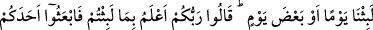
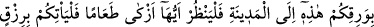
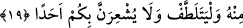

Fakir (Bursevî) der ki: “Âyetteki “Eğer onların durumlarına muttali olsa idin...”
ifâdesinde hitâb Rasûlullah (s.a.)’edir. İşâreti ise bu hitâba ehil olan bütün ümmetinedir.
Muâviye (r.a.) de bu hitâbın işâretine dâhildir. Onun için Ashâb-ı Kehf’i araştırması
boşuna ve faydasızdır. Çünkü normal ölçüleri aşan olağanüstü şeylere muttali olmak,
her nazara müyesser olmaz.
Görmüyor musun ki Rasûlullah (s.a.)’e melekiyyet gâlib olduğu halde Cebrâil (a.s.)’ı
bir kanadı doğuyu, bir kanadı batıyı kaplamış vaziyette aslî hüviyeti ile görünce düşüp
bayıldı. Ayrıca ehil olmayanların Ashâb-ı Kehf’e bakmaları, onların değerini düşürür.
Zâten Cenâb-ı Hakk’ın âlemde cereyan eden âdeti de dünyada mânâların, âhiret
hayatının başlangıcı olan berzahta da sûretlerin gizlenmesi şeklide cereyân eder.
Nitekim ruh, bakanın gözü perdeli olduğu için berzah âleminde görülemediği gibi,
temiz, tayyib ve mukaddes cesed de ruh makamına muttasıl olduğu için, onu toprak
yemez (çürütmez). Anla!
Hikâye edilir ki bir sûfî, evliyâullahtan bir zâtı gördü. O zat bir aslana binmiş, kamçı
yerine bir yılanla onu sürüyordu. Derviş bunu görünce, o makâmın heybetinden helâk
oldu.”
Ham olanlarda kanatları yanmış pervanenin gücü yoktur
19. Böylece biz, onları dirilttik ki birbirlerine sorsunlar: İçlerinden biri: “Ne
kadar kaldınız?” dedi. (Kimi) “Bir gün ya da günün bir parçası kadar kaldık”
dediler; (kimi de) şöyle dediler: “Rabbiniz, kaldığınız müddeti daha iyi bilir. Şimdi
siz, içinizden birini şu gümüş paranızla şehre gönderin de, baksın, (şehrin) hangi
yiyeceği daha temiz ise size ondan erzak getirsin; ayrıca, nâzik davransın (gizli
hareket etsin) ve sakın sizi kimseye sezdirmesin.”
Kâşifî der ki: “Dakyanus onların üzerine mağarayı sıkıca kapattıktan sonra geri döndü
ve saltanat merkezine vardı. Bir müddet sonra ecel rüzgârı onun hayat binâsını yıktı.
Onun bütün mülkü, malı ve azameti yok oldu.”
Birkaç nefes saydı ve îtibarsız, nâçiz oldu
Zaman o da gitti diye güldü
“Dakyanus’tan sonra birkaç kral o memleketi idâre etti. Sonunda sıra sâlih bir kral
olan Tendrus’a ulaştı. Tendürüs Hak Teâlâ’ya inanan ve ondan korkan bir kimseydi.
Onun zamanında pek çok kimselerin kalbine cesedin haşri konusunda şüphe düştü. Kral